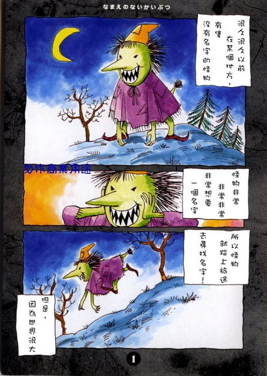
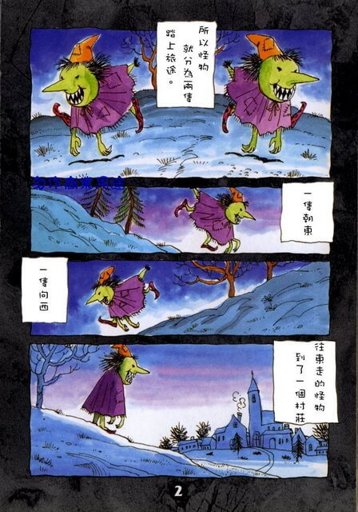
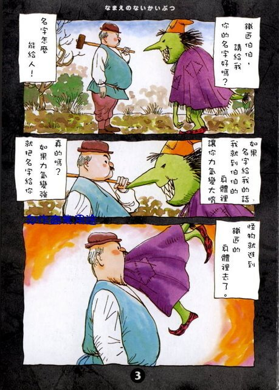
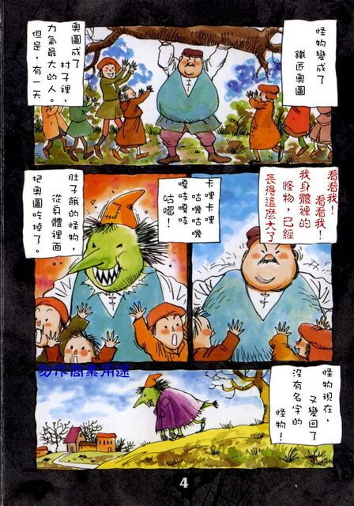
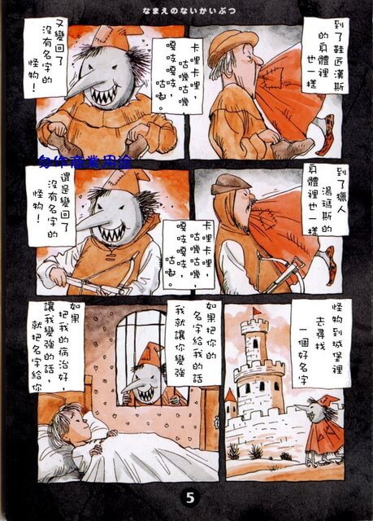
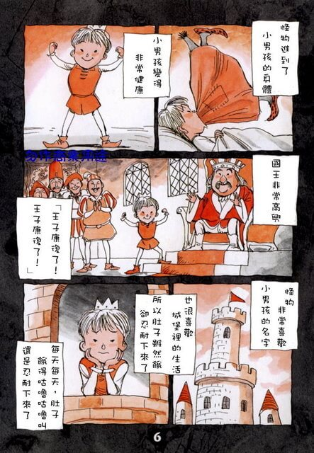
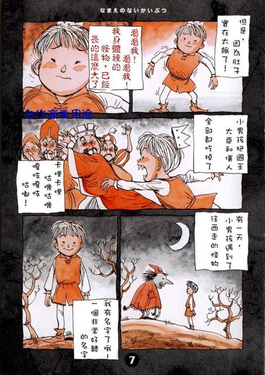
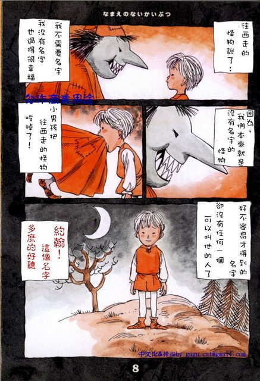
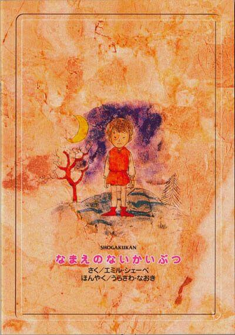

[绘本] - 没有名字的怪物
来源
绘本：怪物特別篇：沒有名字的怪物
动漫：monster
图画









文本
很久很久以前,在某个地方有只没有名字的怪物。
Once upon a time,there lived a monster without a nime
怪物非常非常想要一个名字。
The monster wanted a name so badly that he couldn’t stand it.
所以怪物就踏上了旅途，去寻找名字。
So the monster decided to go off on a journey to find himself a name.
但是，因为世界很大。
But because the world was so big.
所以怪物就分裂成两只，踏上旅途。
The monster split in two and went on two separate journeys.
一只往东，另一只往西。
One went east and the other went west.
往东走的怪物，找到一个村庄。
The one that went east found a village.
在村庄里住着一个铁匠。
There was a blacksmith at the village entrance.
“铁匠伯伯，请你把你的名字给我。”
“Mr.Blacksmith,please give me your name.”
“名字怎么能给人。”
“I can’t give you my name.”
“如果把名字给我的话，”
“If you give me your name,”
“我就到伯伯的身体里 让你的力气变大作为谢礼。”
“I will jump inside you and make you stronger in return.”
“真的吗？如果力量变强了，就把名字给你吧。”
“Really?I’ll give my name if you can make me stronger.”
怪物就进到了铁匠的身体里去了。
The monster jumped inside the blacksmith.
怪物变成了铁匠奥图。
The monster became Otto the blacksmith.
奥图成了村子里力气最大的人。
Otto the blacksmith was the strongest man in the village.
但是，有一天…
But one day…
“看看我！看看我！”
“Look at me! Look at me!”
“我身体里的怪物,已经长得这么大了哦！”
“The monster inside me has grown this big!”
咔哩咔哩，咕叽咕叽，嘎吱嘎吱，咕嘟。
Chomp.Munch.Crunch.Gulp
肚子饿的怪物,从身体里面把奥图吃掉了。
The hungery monster ate Otto from the inside out.
怪物又变回了没有名字的怪物。
He went back to being amonster without a name.
到了鞋匠汉斯的身体也一样，
Even though he jumped inside Hans the shoemaker…
咔哩咔哩，咕叽咕叽，嘎吱嘎吱，咕嘟。
Chomp.Munch.Crunch.Gulp.
又变回了没有名字的怪物。
He went back to being amonster without a name again.
到了猎人汤玛斯的身体也一样，
Even though he jumped inside Thomas the hunter…
咔哩咔哩，咕叽咕叽，嘎吱嘎吱，咕嘟。
Chomp.Munch.Crunch.Gulp.
还是变回了没有名字的怪物。
He still went back to being amonster without a name.
怪物到城堡里寻找一个好名字。
The monster went to the castle to find a wonderful name.
在城堡里，有一个非常虚弱的男孩。
Inside the castle,there was a very sick boy.
“如果把你的名字给我的话，我就让你变强。”
“I’ll make you stronger if you give me your name.”
“如果把我的病治好，让我变强的话，我的名字就给你。”
“I’ll give you my name if you can cure my illness and make me stronger.”
怪物就进到了小男孩的身体里去了。
The monster jumped inside the boy.
小男孩变得非常健康。
The boy became very healthy.
国王非常高兴。
The king was delighted.
“王子康复了！王子康复了！”
“The prince is well! the prince is well!”
怪物非常喜欢小男孩的名字。
The monster became fond of the boy’s name.
也很喜欢城堡里的生活。
He also grew fond of his life inside the castle.
所以肚子虽然饿，却忍耐下去了。
That’s why he endured even when he became hungry.
每天每天，肚子饿得咕噜咕噜叫，还是忍耐下来了。
Every day,even when his stomach became very empty,he endured.
但是，因为肚子实在太饿了。
But because he became so hungry…
“看看我！看看我！”
“Look at me! Look at me!”
“我身体里的怪物,已经长得这么大了哦！”
“The monster inside me has grown this big!”
小男孩把国王、大臣和仆人全部都吃掉了。
The boy ate his father,his servants,and everyone.
咔哩咔哩，咕叽咕叽，嘎吱嘎吱，咕嘟。
Chomp.Munch.Crunch.Gulp.
因为谁都不在了，小男孩离开了那个国家。
Because everyone was gone the boy left on a journey.
他走了一天又一天。
He walked and walked for days.
有一天，小男孩遇到了往西走的怪物。
One day the boy met the monster that went west.
“我有名字了哦，一个非常好听的名字。”
“I have a name,It’s a wonderful name.”
往西走的怪物说了，
And then the monster that went west said…
“我不需要名字，我没有名字也过得很幸福。”
“I don’t need name,I’m happy even if don’t have a name.”
“因为我们本来就是没有名字的怪物。”
“Because we’re monsters without names.”
小男孩把往西走的怪物吃掉了。
The boy ate monster that went west.
好不容易才得到的名字，
Even though he now had a name…
却没有任何一个可以叫他的人了。
There was no one left to call him by his name.
约翰，这个名字多么好听。
Johan. it is a wonderful name
Google广告
假装这里有广告